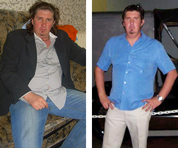

-
Szuper anyuka vagyok!
Az iskolában a gyerekek nevettek a lányomon, hogy "az édesanyja olyan nagy, mint a víziló." Nos, igazuk volt... elhíztam, a testem meg volt terhelve, alig mozogtam. Nem tudtam, mit tegyek. Szerettem volna boldog és örömteli édesanya lenni, ehelyett mindig fáradt voltam és lihegtem, amint néhány lépést tettem. Szerencsére hallottam erről a kezelésről. Már az első alkalmazásától jobban éreztem magam. Kb. 2 hónap elteltével 23 kg-t fogytam. Úgy érzem, könnyű vagyok és képes vagyok lépést tartani a lányommal!
-
Egyszerű és hatékony
Nem gondoltam volna, hogy egy ilyen egyszerű módszer ilyen csodákra képes. Egyszerűen felragasztod a kapszulák, és azonnal el is kezdesz zsírt égetni. Már használom én is, a nővéreim is, és az unokatestvéreim is. Mindenkinek ajánlom! Ez egy valódi áttörés a fogyás területén!
-

A feleségem már nem panaszkodik
A segítségével 7 héten belül 22 kg-ot fogytam. Úgy éreztem, mintha valaki a hátamról egy nehéz zsákot venne le. A feleségem végül abbahagyta a panaszkodást, hogy kövér vagyok, és szívrohamban fogok meghalni. Most már férfiként néz rám!
-
Visszanyertem magabiztosságom
A súlyommal kapcsolatos problémák az én esetemben 30 éves korom után jelentek meg. Néhány éven belül 28 kg-ot szedtem fel. Eladóként dolgozom egy boltban, így jól kell kinéznem és sokat kell mozognom. Nincs időm arra, hogy sétáljak a tornateremben és nem vagyok elég egészséges ahhoz, hogy drasztikus diétákat folytassak. Nagyon szégyelltem, hogy elhíztam, és fogyni akartam. Különösen azért, mert még nincs férjem, és szeretnék valakivel találkozni. Kezdetben nem hittem, hogy a kezelés, amely egy ilyen olcsó ajánlat kereteinben belül kapható, hatékony lehet. De a saját bőrömön tapasztaltam meg, hogy működik. 25 kg-t fogytam, visszanyertem karcsú alakomat, és ismét vonzó csajszi vagyok!
-
Hasznosnak érzem magam
Évekig csak ülőmunkát végeztem, mivel hivatalnok vagyok, és ez kikészítette a szervezetem. Tudjuk hogy megy ez... az ember egész nap ül, munka után nincs ereje mozogni, plusz a felesége is jól főz rá. Így lassan elzsírosodtam, egészen 114 kg-ra. Hirtelen elkezdtem állandóan fáradtnak érezni magam, a súlytöbblet miatt álmos voltam, otthon nem segítettem, a munka sem ment igazán. A lányom adta nekem ezeket a kapszulák. Végre valami! A különbséget azonnal éreztem. Leadtam 26 kg-ot. Több energiám van, és 20 évvel fiatalabbnak érzem magam. Újra aktívan töltöm az időt a családommal, úgy mint korábban.
-

Visszamentem dolgozni
Másodállásban éjszakai őr voltam. Az egyik éjszakai műszak alatt egy pillanatra meg akartam pihenni és akkor hallottam a vészjelzőt. Megláttam egy csapatnyi embert, akik betörtek. Próbáltam elkapni őket, de a túlsúlyom miatt szinte azonnal szörnyű légszomj ért utol és elájultam. A betörők kifosztották a raktárat, engem pedig kirúgtak az állásomból. Elkezdtem kutakodni valamilyen fogyókúrás módszer után és mindenhol azt írták, hogy a a legjobb. Kipróbáltam és 40 nap után bő 15 kilóval voltam soványabb. Lenyűgöző változás. Visszanyertem erőnlétemet és újra munkába állhattam.
-
Új élet ilyen alacsony áron
Mindig azt mondták, hogy a túlsúly a falánkság eredménye, és elég kevesebbet enni a fogyáshoz. Dehogy! Szörnyű diétákkal kínoztam magam, naponta csak három almát ettem, és semmi eredménye nem volt, mintha az anyagcseréim egyszerűen nem működött volna! Csak a használatát követően éreztem a különbséget már néhány nap elteltével. Mielőtt érzékeltem volna a helyzetet, 12 kg-mal kevesebbet mutatott a mérleg és csak 4 hét telt el! Csoda!
-

Az egyetlen hatékony módszer
Különböző módszerekkel próbáltam lefogyni, volt mit leadni, mivel 34 kg súlyfelesleg volt rajtam. Semmi sem volt hatékony, csak felemésztette az energiát, a reményt és a nehezen megkeresett pénzt. A használata nem ilyen volt. 30 kg-ot adtam le és olyan, mintha egy új élet kaptam volna ajándékba.
28 nap alatt 14 kg-t fogysz – az eredményt független orvosi tesztek igazolják
Üdvözöllek!,
Skriba Dániel professzor vagyok, kutató, szakterületem a molekuláris biológia. Ezen az oldalon szeretném bemutatni neked életem eddigi legnagyobb eredményét, amiért már tucatnyi nívós díjat kaptam. Kidolgoztam egy természetes kúrát, amellyel bárki akár 14 kg-ot fogyhat 28 nap alatt: automatikusan, diéta és erőfeszítés nélkül.
Ezért, amennyiben az életmódod megváltoztatása NÉLKÜL szeretnél:
- leadni 14 kg-t 28 nap alatt – még akkor is, ha az éhezés és az intenzív edzés korábban nem hozott eredményt;
- csökkenteni a koleszterinszinted – a módszer már első 2 hetes használata során és szeretnéd csökkenteni 82%-kal az érelmeszesedés kockázatát;
- csökkenteni a vércukorszinted – és hatékonyan meelőzni a cukorbetegség kialakulását;
- csökkenteni 91%-kal annak kockázatát, hogy – agyvérzést, szívrohamot kapsz vagy ízületi megbetegedés alakul ki nálad;
- egyszer s mindörökre meggátolni a jojóeffektust;
- 3-szor több energiára szert tenni és tökéletesen kinézni bármely ruhadarabban...
Ezt mindet megteheted anélkül, hogy a dietetikushoz járnál, diétáznál, edzenél, éheznél, áldozatokat hoznál vagy frusztrálttá válnál és ugyanakkor több százezer forintot is megspórolnál. Ezért mindenképpen olvasd el, amit el kell mondanom.
Nem számít, mennyi idős vagy, milyen gyógyszereket szedsz, és mióta vagy túlsúlyos. Nem számít, hogy az elhízás örökletes-e, terhesség vagy gyógyszeres kezelés következtében alakult-e ki. Nem számít, hogy csak pár kiló súlyfelesleg van-e rajtad vagy súlyosan elhíztál. Még ha a több száz fogyási kísérlet nem is hozott eredményt és csak további csalódást okoztak... tudnod kell, hogy ennek vége. Az én módszeremnek köszönhetően 28 nap alatt akár 14 kg-ot is lefogyhatsz és végre vonzó, vékony alakod lehet. Erőfeszítés, diéta vagy egyáb éldozatok nélkül.
Íme az ok, amiért az én módszerem a diéták tökéletes alternatívája lehet.
- Természetesen, a testtel összhangban működik. Ha éhezel, soha nem fogod elérni a célod. Testünket evésre tervezték. Ez egyértelmű és nyilvánvaló. Abban a pillanatban, amikor megtagadod az ételt, a természettel ellentétesen jársz el. Így nem érhetsz el karcsúsító hatást hosszabb időn át. Ugyanez történik, amikor arra kényszeríted a szervezetet, hogy természetellenes gyakorlatokat végezzen. A módszerem megváltoztatja a zsírszövetek égetésének módját és az anyagcserét, és így...
- Garantálja a gyors és nagyon nagy hatást. Ahelyett, hogy hónapokig párolt zöldségeket ennél, a kedvenc ételeidről és édességeidről lemondva, és minden gramm ételt kiszámolva, egyszerűen zsírégetésre állíthatod rá a tested. Súlyemelés, fekvőtámasz és egyéb badarságok nélkül. A lényeg az anyagcsere-mechanizmusok megfelelő működése.
- Nem kell éhezned. Igen, ahogy mondtam: bármit ehetsz, amit akarsz, amennyit akarsz, és amikor akarsz. Nem az étel az, amely miatt nem tudsz fogyni, hanem a folyamat ahogy a szervezet elfogyasztja az ételt, és hogy hogyan alakítja át energiává.
- Napi 24 órán keresztül automatikusan égeti a zsírt. Még a kanapén feküdve, kézben tartva a TV távirányítót is hatékonyan fogyaszthatsz. Mindez azért van, mert az én módszerem több mint 350%-kal csökkenti az étvágyat és a zsírégetési folyamatokat.
- Védi az egészséged. A módszerem megtisztítja a szervezetet a halálos lerakódásoktól és toxinoktól, valamint csökkenti a rossz koleszterinszintet és a vércukorszintet. Ennek köszönhetően radikálisan csökkenti az érelmeszesedés, az agyvérzés, a szívroham és a cukorbetegség kockázatát, valamint a térd- és csípőízületek degenerálódását.
- Lefogyaszt egyszer és mindenkorra. Az én módszerem a test természetes működésével összhangban hat. Ennek köszönhetően nem lép fel a fogyást követő jojóeffektus.
- Több százezer forintot spórolhatsz. Ahelyett, hogy pénzt pazarolnál dietetikusokra, edzőkre és állítólagos diétás termékekre, használhatod az én módszeremet mindössze 1 hónapig, és egyszer és mindenkorra megszabadulsz a túlsúlytól.
Kidolgoztam egy természetes módszert, amely megszünteti a túlsúly okait és automatikusan égeti a zsírt
A segítségével a túlsúlytól egyszer és mindenkorra megszabadulsz, eléred az álomalakot és megvéded az egészséged... El fogod felejteni a természetellenesen nagy méretű ruhákat, a térdfájdalmat a lépcsőn felfelé menve, a néhány lépés után jelentkező légszomjat, az óriási mennyiségű izzadtságot egy kisebb erőfeszítést követően valamint a szégyent, a frusztrációt és az irigységet, amely miatt oly sokszor szenvedtél.
A módszeremnek köszönhetően 28 nap alatt körülbelül 14 kg-mal leszel kevesebb. Minden ruhába beleférsz majd, és az alakod csodálatos lesz! Végül büszkén mutogathatod majd a tested a tengerparton, a medencénél vagy a hálószobában a partnered előtt... Mindezt annak köszönhetően, hogy sikerült kidolgoznom egy 2-fázisú formulát, amely megszünteti a túlsúly okait, és a automatikusan égeti a zsírt 24 órán át. Hogyan csináltam?
Szerettem volna, ha a feleségem megszabadul a komplexusaitól
A legújabb kutatások szerint Magyarországon minden harmadik ember túlsúlyos. Ez a probléma a nők számára a legjelentősebb. A szép test önbizalmat ad, és biztosítja, hogy attraktívnak érezzük magunkat - ez mindenki számára természetes szükséglet. Ami még rosszabb, hogy a túlsúly az egészségre is rendkívül káros hatással van . Nem csak a stroke, az atherosclerosis, a diabétesz, az ízületi gyulladások vagy a szívinfarktus kockázatát növeli jelentősen (nagyjából 350%-kal), de a mindennapi életet is megnehezíti azáltal, hogy bütykök, ekcéma, vagy allergiák kialakulásához vezethet. Sajnos a feleségem, Ágota is hasonló problémákkal küzdött...
Az esküvőnk előtt szép, formás kis nő volt. Nem számolta a kalóriákat, evett, amit akart, és nem hízott. Azonban az évek során és a két gyermekünk születése után, kezdett elhízni. Az úszógumi a hasán, a masszív csípője és combja komplexusai kialakulásának alapját jelentették. Bár úgy szerettem őt, ahogy volt, azt is észrevettem, hogy nincs teljesen jól, sem fizikailag, sem pedig szellemileg.
Ágota szégyellte a testét, nem tudott megbarátkozni azzal, ahogy kinéz. Folyamatosan irritálta, komoly problémát jelentett számára. Egy nap hisztérikus állapotban tért haza. "Kiszakadt rajtam a ruha. Egy ronda kövér bálna vagyok!" - kiabálta. Becspata maga mögött az ajtót, és bezárkózott a hálószobába. Így néztek ki a mindennapjaink.
Az életére is veszélyt jelentett!
A legrosszabb azonban csak ezután jött. Az egészsége is romlani kezdett. Az ízületei kezdték felmondani a szolgálatot. Nem tudott felmenni az emeletre, mert a térdei annyira fájtak, és a levegővétellel is problémái voltak. Ezért ment el orvoshoz, aki azonban az együttérzés legkisebb jelét sem mutatta felé. Őszintén szólva csak ennyit mondott: "Ha nem fogy le, és nem csökkenti a koleszterinszintjét, akkor nem fogja megélni az öregkort ". Ezért kezdett el diétázni, vagyis leginkább... éhezni. Sajnos a diéta sem volt hatékony. Ha le is adott pár kilót, az anyagcseréje akkor is teljesen lelassult. Egyre frusztráltabbá vált. Nem elég, hogy elégedetlen volt a kinézetével, még az egészsége is romlani kezdett.
Hogyan fedeztem fel „a túlsúly ellenszerét”?
Segítenem kellett a feleségemnek, hogy visszanyerje karcsú alakját, és ezzel együtt jó közérzetét, valamint mindenekelőtt az egészségét. Azt akartam, hogy megszabaduljon a kinézetével kapcsolatos megszállottságától és boldog legyen. Azt gondoltam magamban: „Álljunk meg egy szóra, hisz' én tudós vagyok! A kisujjamban van a biológiája és a kémia. Már számos szert fejlesztettem ki különböző betegségekre. Ki kell találnom valamit a túlsúlyra!” Aztán elkezdtem a kutatást...
Több mint egy éven át végeztem intenzív laboratóriumi vizsgálatokat. A hatóanyagok különböző kombinációit teszteltem a feleségemen. Csak annyit mondanék, hogy mindegyikük 100%-ban természetes és biztonságos a szervezet számára. A tudományos ismeretek, a kemény munka és a szerencse hamar meghozták a gyümölcsüket. Kifejlesztettem egy egyedi, 2-fázisú testsúlycsökkentőt. -ek neveztem el. Azonnal bejelentettem, hogy nagyszabású kutatást végezhessenek rajta. 98%-os hatékonyságát a legnagyobb európai és amerikai kutatóközpontok is megerősítették! A tesztek során a formula természetes módon csökkentette az önkéntesek súlyát átlagosan 14 kg-mal havonta.
A feleségem gyakorlatilag azonnal a 2-fázisú fogyókúrás kezelésem használatát követően jobban érezte magát. Örült, hogy nem törnek rá éhségrohamok, mondta, hogy már nincs csillapíthatatlan vágya, hogy egyen valami egészségtelent vagy valamilyen édességet. És ez még csak a kezdet volt. Az első héten már 5 kilót fogyott. Visszanyerte az energiáját. "Úgy érzem, mintha elillanna a zsírom" – pirospozsgássá vált az örömtől, amikor felvett egy nadrágot, amibe utoljára 4 éve fért be!
Diéta nélkül fogyott 26 kilogrammot 2 hónap alatt
Nem hittünk a szemünknek, hogy a mérleg minden nap egyre kevesebb kilót mutatott, és a feleségem derekán, csípőjén és combján lévő zsírrétegek csökkentek. Az utálatos narancsbőr is eltűnt. Két hónap múlva a feleségem boldogan közölte: „Az esküvői ruhámat is felpróbáltam és tökéletesen illik rám! Visszanyertem az esküvő előtti alakomat! Felfedezted a túlsúly ellenszerét! Hány emberen fog segíteni! Köszönöm szépen.”
Ágota, a 2-fázisú fogyasztó formulámnak köszönhetően leadott 26 kg-ot 2 hónap alatt. Automatikusan fogyott, kínzó diéta és testmozgás nélkül. Megtisztította a testet és felszabadította a benne rejlő energiákat: most lépcsőn gyorsabban megy fel, mint a lányunk - és semmije sem fáj! De ez nem minden. A rendelőben a házi orvosa is dicsérte eredményeit. A koleszterinszintje normalizálódott, és már nem fél az érelmeszesedéstől, a stroke-tól vagy a szívrohamtól!
A nagy súlyvesztés elérése úgy, hogy az egészségünk ne romoljon, eddig szinte lehetetlen volt. Manapság a 2-fázisú fogyókúra-formulám segítségével nemcsak gyorsan és biztonságosan fogyhatunk, de elkerülhetjük a jojóeffektus kialakulását is.
A feleségemnek most olyan a teste, mint az esküvő előtt, megnőtt az energiaszintje és sokkal boldogabb
Hadd magyarázzam el röviden, miért olyan hatásos ez a fogyasztó formula. Működése kétfázisú:
I. Fázis – A szervezet megtisztítása
Sosem fogysz le még 1 kg-ot sem, ha nem tisztítod meg a testedet. Még akkor sem, ha éhezel vagy az edzőteremben végzett gyakorlatokkal szenvedsz. A súlyod nem változik, mert a belekben további 15 kg rothadó üledék és véráramban méreganyagok gyűltek fel. Ezek gátolják az anyagcserét és blokkolják a zsírégetést. Bár lehet, hogy létezésükről nem is tudsz. Nincs menekvés tőlük. A levegővel lélegzed be őket, a vízzel iszod őket, és az ételekkel eszed őket, még a gyümölcsökben és a zöldségekben is jelen vannak.
A képletem hatékonyan megtisztítja a szervezetet a méreganyagoktól és a toxinoktól. A testet egy teljesen más működési módra állítja át, a toxinok eltávoztak, a zsírszövet gyorsabban ég és az élelmiszerből 15-ször nagyobb az energiafelvétel. Éppen ezért lehetséges az éhségrohamok leküzdése, az étvágy csökkentése és a jojóeffektus leállítása. Ennek köszönhetően néhány nap múlva a módszerem használatával beléphetsz az automatikus zsírégetés szakaszába.
II. Fázis – Automatikus zsírégetés
A formulámba olyan természetes anyagokat is beépítettem, amelyek szó szerint feloldják a zsírsejteket. Nem kell edzőterembe járni, futni vagy gyakorolni. Ha izomzatot szeretnél, akkor persze igen, azonban, ha csak meg akarsz szabadulni a hasadon, a combodon és a fenekeden lévő zsírtól és a narancsbőrtől, akkor használd a 2-fázisú fogyókúrás formulát.
Már néhány nap elteltével automatikusan elkezded égetni zsírt a nap 24 órájában, még alvás közben is. Mi több, állandó blokkolásra kerül a jojóeffektus. Biztos lehetsz benne, hogy megszabadulsz a gyűlöletes zsírtól, ami vissza sem fog térni. Ennek a módszernek köszönhetően megállítod a zsírszövet lerakódását molekuláris szinten, és radikálisan felgyorsítod a zsírégetést.
Miért nevezik a 2 fázisú formulámat „a fogyás csodálatos ellenszerének”?
TÖBB MINT 98%-OS HATÉKONYSÁGGAL BÍR

ELŐTTE
Az anyagcserét blokkolják a méreganyagok és a toxinok
UTÁNA
A szervezet megtisztult – az anyagcsere teljes erőbedobásal működik
Eddig a hatékony fogyás teljesen lehetetlennek tűnt. Ma a kétfázisú karcsúsító formulám segítségével nem csak hogy megállíthatod, de teljesen vissza is fordíthatod a súlygyarapodást. Ezt megerősíti a feleségem és más 14 ezer fő, akik már a 2 fázisú karcsú karcsúsító formulámnak köszönhetően vékony alakot értek el. Sőt, a hatékonyságát a chicagói amerikai kutatóközpont minden kétséget kizáróan bizonyította. Ez egy világméretű felfedezés, amely felismerte és csodálja e kiváló szakemberek eléréseit a táplálkozás és a fogyás terén.
100%-BAN BIZTONSÁGOS ÉS GYEREKJÁTÉK A HASZNÁLATA
A természetben fellelhető összetevők csodát tesznek – elég, ha a tudomány kidolgozza az ideális kompozíciójukat! Ez volt a mottóm, ami tartotta bennem a lelket a 2 fázisú fogyókúrás formula létrehozása alatt. A kezelés kizárólag természetes, biztonságos és szuper-hatékony összetevőket tartalmaz. Öntapadós kapszulák raktam, hogy mindenki gond nélkül önállóan, otthon is végig tudja csinálni a kezelést. Elég naponta lecserélni a tapaszt, hogy láthassuk hogy minden nap szó szerint miként szökik meg a hasról, combról és fenékről a háj, felfedve a vágyott, karcsú alakot.
Minden barátom, ismerősöm és családtagom le lesz nyűgözve az átalakulásod miatt. Alig akarják majd elhinni, hogy olyan gyorsan lefogytál, pedig semmit sem csináltál!
A kezelés egyedi formulája kapszulák, aminek köszönhetően 3 szinten hatnak, ezáltal biztosítva:
1. Teljes biztonság az egészségedre nézve – A kétfázisú karcsúsító módszer nem tartalmaz olcsó töltőanyagokat (például lisztet vagy gipszet) vagy veszélyes parazitalárvákat, úgy mint a karcsúsító kapszulák 30%-a. Teljesen természetes és egészséges. Ennek köszönhetően a test azonnal felhasználja és megkezdi működését.
2. Az összetevők mélyebb felszívódását – a transzdermális módszer alkalmazása lehetővé teszi, hogy az aktív összetevők a szervezet mélyen szívódjanak fel. A felragasztott tapaszt 350%-kal jobb aktív hatóanyag felvételt tesz lehetővé, ugyanakkor a megfelelő hidratálást is ellátja. Ez nagyon fontos a fogyókúra szempontjából. A legtöbb módszer ennyire rövid idő alatt nem képes ennyire nagy mértékű aktív hatóanyag felszívódást előidézni.
3. Azonnali működés – a transzdermális kapszulák révén a kúra azonnal hatni kezd. Ha feltettél volna egy tapaszt ezen szöveg elolvasása előtt, már most égetnéd a zsírt!
A MÉREGANYAGOK ÉS TOXINOK ELTÁVOLÍTÁSA
VÉDI EGÉSZSÉGÜNKET, FENNTARTJA A VITALITÁST
AZ ANYAGCSERE MAGASABB SZINTEN VALÓ MŰKÖDÉSE

KÖNNYŰ HASZNÁLAT
AUTOMATIKUS ZSÍRÉGETÉS 0-24 ÓRÁBAN
TÖBB SZÁZEZER FORINT MEGTAKARÍTÁS
Hogyan is vesztegethetnéd el az alkalmat az áhított, karcsú alak elérésére?
Továbbra is szenvedhetsz a túlsúlyod miatti komplexusaidtól továbbra is veszélyeztetheted az egészséged. Továbbra is szenvedhetsz az eredménytelen diétákkal... De miért is tennéd, ha én garantálni tudom neked a gyors, egyszerű és biztonságos módszert arra, hogy 28 nap alatt 14 kg-tól szabadulj meg és elérd az áhított, karcú alakot? Mindössze 28 napos kezelésre van szükség ahhoz, hogy csatlakozz a azon 14 ezer elégedett felhasználójához, akiknek már sikerült lefogyni, alakjuk vonzó és jó egészségnek örvendenek.
Semmit sem kockáztatsz!
A használatával 14 kg-tól is megszabadulhatsz 28 nap alatt. Ráadásul nem kockáztatsz semmit! Világszerte elért eredménynek tekinthető, hogy a kétfázisú fogyókúra formulám presztízsértékű háromszoros elégedettségi garanciát kapott: eredetiség, minőség és az elégedettség.
Háromszoros elégedettségi garancia
Eredetiségi garancia – a -ben először alkalmaztak ilyen hatékony fogyasztó anyagokat. Ez egy olyan egyedi kompozíció, amely legyőzi a túlsúly okát és beindítja a szervezet automatikus zsírszövetlebontását. Ezért biztos lehetsz benne, hogy az eredeti kezelés jut el hozzád, amely ezen az oldalon keresztül érhető el.
Minőséggarancia – a kezelés előállítása egy igen fejlett folyamat révén megy végbe, a hatóanyagai pedig megfelelnek a legmagasabb minőségi normáknak is. Eme igen erős fogyasztó kompozíciót úgy rakták össze, hogy az teljesen veszélytelen legyen a szervezetre nézve. Mindez annak érdekében, hogy 100%-ban eleget tegyen elvárásaidnak.
Elégedettségi garancia – a kezelés hatékonyságát az a tény is megerősíti, hogy minden felhasználója képes volt sikeresen leadni legalább 14 kg-t 1 hónap alatt. Mindenki, velem egyetemben, biztos benne, hogy neked is sikerül letudni a túlsúly rémálmát és büszkeséggel fogod magad mutogatni új, karcsú mivoltodban.
Fogyj le 14 kg-t 28 nap alatt a -vel gyorsan, könnyedén és takarékosan
Nagy gyógyszerészeti vállalatok az USA-ból és Japánból szó szerint küzdenek a 2-fáziú fogyasztó formula szabadalmaztatásért. Miután eladom a szabadalmat, a kezelés elérhető lesz a világ minden táján, de természetesen nagyon magas áron.
Mielőtt ez megtörténne, úgy döntöttem, hogy először Magyarországon teszem elérhetővé a kedvezményklubban való részvételért - pénzügyi támogatással 59%-kal olcsóbban. Mindez annak érdekében, hogy a lehető legtöbb embernek segítsek hazánkban hatékonyan lefogyni.
Ezért azt javaslom, hogy használd ki ezt a lehetőséget! A kedvezményklub megrendelése egyszerű. Nem kell pénzt küldened online, vagy kártyával fizetned, hogy megkapd a -t. Mindössze annyit kell tenned, hogy kitöltöd a formanyomtatványt 2 perc alatt, és néhány nap múlva megkapod egy csomagot, amelyet kényelmesen kifizetsz a futárnak vagy a postásnak.
Köszönöm az üzenetem elolvasására befektetett időd. Sok szerencsét kívánok az új életedben. Túlsúly és komplexusok nélkül, önbizalommal és életkedvvel teli életben.
prof. Skriba Dániel
-
Szuper anyuka vagyok!
Az iskolában a gyerekek nevettek a lányomon, hogy "az édesanyja olyan nagy, mint a víziló." Nos, igazuk volt... elhíztam, a testem meg volt terhelve, alig mozogtam. Nem tudtam, mit tegyek. Szerettem volna boldog és örömteli édesanya lenni, ehelyett mindig fáradt voltam és lihegtem, amint néhány lépést tettem. Szerencsére hallottam erről a kezelésről. Már az első alkalmazásától jobban éreztem magam. Kb. 2 hónap elteltével 23 kg-t fogytam. Úgy érzem, könnyű vagyok és képes vagyok lépést tartani a lányommal!
-
Egyszerű és hatékony
Nem gondoltam volna, hogy egy ilyen egyszerű módszer ilyen csodákra képes. Egyszerűen felragasztod a kapszulák, és azonnal el is kezdesz zsírt égetni. Már használom én is, a nővéreim is, és az unokatestvéreim is. Mindenkinek ajánlom! Ez egy valódi áttörés a fogyás területén!
-
A feleségem már nem panaszkodik
A segítségével 7 héten belül 22 kg-ot fogytam. Úgy éreztem, mintha valaki a hátamról egy nehéz zsákot venne le. A feleségem végül abbahagyta a panaszkodást, hogy kövér vagyok, és szívrohamban fogok meghalni. Most már férfiként néz rám!
-
Visszanyertem magabiztosságom
A súlyommal kapcsolatos problémák az én esetemben 30 éves korom után jelentek meg. Néhány éven belül 28 kg-ot szedtem fel. Eladóként dolgozom egy boltban, így jól kell kinéznem és sokat kell mozognom. Nincs időm arra, hogy sétáljak a tornateremben és nem vagyok elég egészséges ahhoz, hogy drasztikus diétákat folytassak. Nagyon szégyelltem, hogy elhíztam, és fogyni akartam. Különösen azért, mert még nincs férjem, és szeretnék valakivel találkozni. Kezdetben nem hittem, hogy a kezelés, amely egy ilyen olcsó ajánlat kereteinben belül kapható, hatékony lehet. De a saját bőrömön tapasztaltam meg, hogy működik. 25 kg-t fogytam, visszanyertem karcsú alakomat, és ismét vonzó csajszi vagyok!
-
Hasznosnak érzem magam
Évekig csak ülőmunkát végeztem, mivel hivatalnok vagyok, és ez kikészítette a szervezetem. Tudjuk hogy megy ez... az ember egész nap ül, munka után nincs ereje mozogni, plusz a felesége is jól főz rá. Így lassan elzsírosodtam, egészen 114 kg-ra. Hirtelen elkezdtem állandóan fáradtnak érezni magam, a súlytöbblet miatt álmos voltam, otthon nem segítettem, a munka sem ment igazán. A lányom adta nekem ezeket a kapszulák. Végre valami! A különbséget azonnal éreztem. Leadtam 26 kg-ot. Több energiám van, és 20 évvel fiatalabbnak érzem magam. Újra aktívan töltöm az időt a családommal, úgy mint korábban.
-
Visszamentem dolgozni
Másodállásban éjszakai őr voltam. Az egyik éjszakai műszak alatt egy pillanatra meg akartam pihenni és akkor hallottam a vészjelzőt. Megláttam egy csapatnyi embert, akik betörtek. Próbáltam elkapni őket, de a túlsúlyom miatt szinte azonnal szörnyű légszomj ért utol és elájultam. A betörők kifosztották a raktárat, engem pedig kirúgtak az állásomból. Elkezdtem kutakodni valamilyen fogyókúrás módszer után és mindenhol azt írták, hogy a a legjobb. Kipróbáltam és 40 nap után bő 15 kilóval voltam soványabb. Lenyűgöző változás. Visszanyertem erőnlétemet és újra munkába állhattam.
-
Új élet ilyen alacsony áron
Mindig azt mondták, hogy a túlsúly a falánkság eredménye, és elég kevesebbet enni a fogyáshoz. Dehogy! Szörnyű diétákkal kínoztam magam, naponta csak három almát ettem, és semmi eredménye nem volt, mintha az anyagcseréim egyszerűen nem működött volna! Csak a használatát követően éreztem a különbséget már néhány nap elteltével. Mielőtt érzékeltem volna a helyzetet, 12 kg-mal kevesebbet mutatott a mérleg és csak 4 hét telt el! Csoda!
-
Az egyetlen hatékony módszer
Különböző módszerekkel próbáltam lefogyni, volt mit leadni, mivel 34 kg súlyfelesleg volt rajtam. Semmi sem volt hatékony, csak felemésztette az energiát, a reményt és a nehezen megkeresett pénzt. A használata nem ilyen volt. 30 kg-ot adtam le és olyan, mintha egy új élet kaptam volna ajándékba.
Rendeld meg még ma és spórolj. Az első 200 darab értékesítése után az akció véget ér.